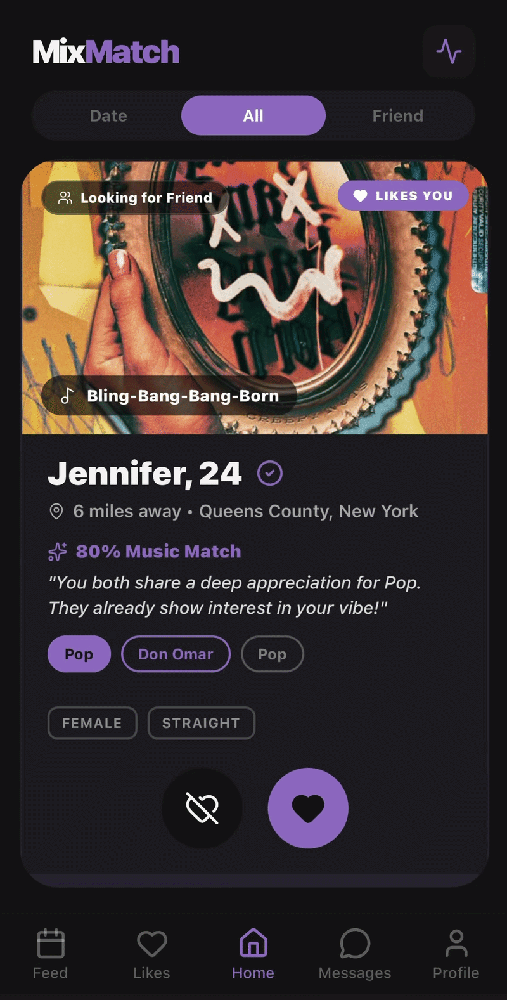
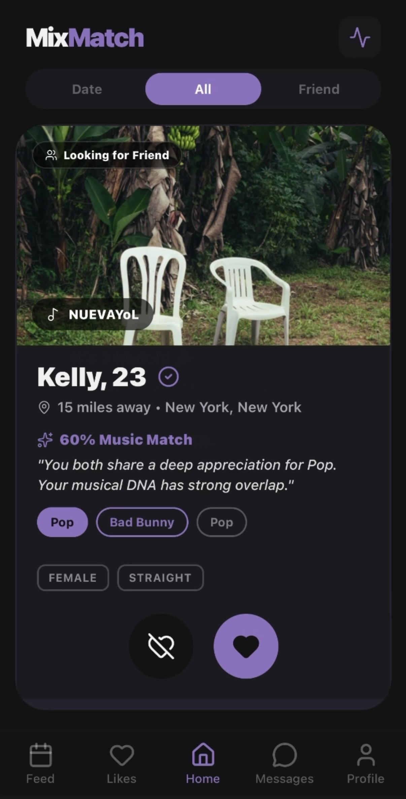
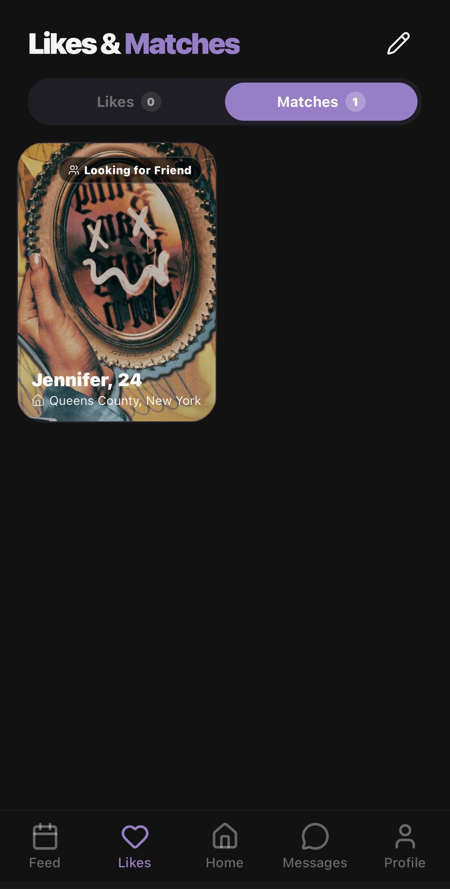
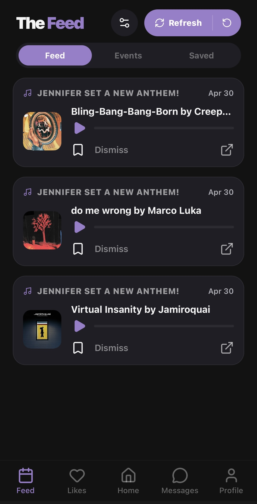
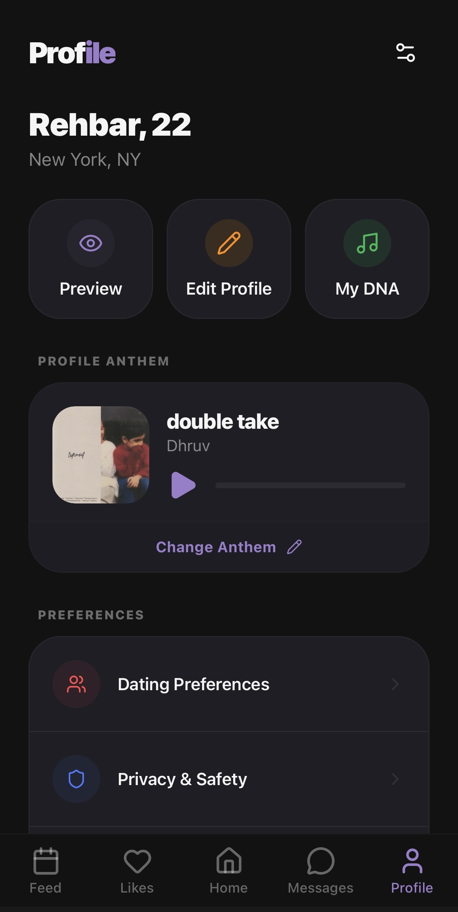

Matching Users Through Music, Not Just Looks
Focused on shared taste over appearance, MixMatch helps users discover more meaningful connections through structured profiles, AI-assisted matching, and real-time messaging.
MixMatch is a full-stack mobile app built with React Native and Firebase, featuring structured profiles, guided interaction flows, and a cohesive mobile UI. The project emphasizes a more immersive and intentional matching experience that goes beyond the typical swipe model.

Project Overview
What is MixMatch?
MixMatch is a full-stack mobile application that rethinks online dating by shifting from appearance-based swiping to music-centered compatibility. Instead of relying only on photos, the app connects users through shared artists, genres, profile details, and AI-assisted match scoring.
Built with React Native and Firebase, the system supports real-time messaging, guided onboarding, and modular user flows for discovery, likes, and communication.
Why MixMatch?
Beyond Appearance-Based Matching
Traditional dating apps prioritize visuals, often leading to low-quality matches. MixMatch focuses on shared interests to improve compatibility.
More Intentional Interaction
Users connect through shared interests and build conversations over time. Voice calls are introduced after sufficient interaction to support deeper connections.
AI-Assisted Match Relevance
Matches are influenced by shared artists and genres, with AI-assisted scoring to better capture similarity in user taste and improve match relevance beyond surface-level preferences.
Core Features
What the app currently emphasizes
MixMatch focuses on profile-driven browsing, structured match exploration, direct messaging, and a cohesive visual system designed for a more engaging mobile experience.
Music-Based Compatibility
MixMatch matches users based on shared music taste, including common artists, genres, and anthem choices, so connections start from meaningful similarities instead of only appearance.
AI-Assisted Match Scoring
The system uses AI to analyze compatibility between users and generate a match score based on music preferences and profile information. This helps improve recommendation quality without making AI the only factor in matching.
Guided Onboarding Filters
Users complete a structured onboarding process that collects key profile details such as dating intention, gender preference, age range, location, distance, lifestyle, education, and music interests.
Mode-Based Discovery
MixMatch separates discovery into Dating and Friend modes, allowing users to explore connections based on their intention while keeping the matching experience organized and intentional.
Profile Cards with Music Identity
The main matching screen presents each user with profile photos, personal details, and music identity, making it easier to understand both attraction and shared interests before interacting.
Progressive Messaging Experience
Matched users can chat in real time, and deeper interaction features such as voice calls are introduced after enough conversation, encouraging users to build trust before moving forward.
App Screens
Current interface preview
The following screens reflect the current visual direction of MixMatch. The app uses a black-and-purple theme, segmented views, rounded layouts, and a consistent mobile-first design language across discovery, likes, messaging, and profile management.

Home Matching Screen
The main discovery view presents users through large profile cards, anthem-based identity, and segmented interaction filters.

Likes Screen
The likes interface organizes connections into All, Date, and Friend categories for a cleaner and more flexible browsing experience.

Feed Screen
The feed screen highlights user anthems and music-related events, helping users discover new songs, interests, and shared experiences.

Profile Screen
The profile page centralizes account management, profile editing, and personalization in a polished and consistent layout.
Development Process
How the project evolved
The project developed through multiple rounds of refinement, balancing design polish, implementation clarity, and alignment with the current working app.
Step 01
Concept Development
MixMatch began as a senior project focused on building a more immersive and visually cohesive matching experience. The goal was to create an app that felt more intentional, polished, and identity-driven.
Step 02
UI and Flow Design
A major part of development centered on refining the user interface across the home screen, likes system, messaging experience, and profile management flow. The goal was to make the app feel modern, organized, and presentation-ready.
Step 03
Feature Refinement
As development progressed, the team refined the scope of the project to better match the current implementation. This included focusing on the features actively represented in the app and improving the clarity of the overall user flow.
Step 04
Current Build
The current version of MixMatch highlights categorized browsing, interactive profile presentation, real-time messaging, and a consistent visual system that ties the mobile experience together.
Current Focus
The current focus of the project is refining the main user experience by improving match card presentation, strengthening categorized likes views, enhancing the chat interface, and making profile management feel more complete and polished.
Technology Stack
Tools used in development
MixMatch is being developed as a mobile application with a strong focus on frontend presentation, organized navigation, and modern development workflows.
Team
Project Contributors
MixMatch is the result of collaborative planning, development, refinement, and presentation across the senior project team.
Dean Husain
Backend & Frontend
Handled backend development including Gemini integration, Firebase configuration, iTunes API, and TypeScript service files. Also contributed to the profile screen, UI polish, bug fixes, and the final report.
Jennifer Kwon
Frontend
Contributed to the frontend by transitioning Canva designs into React Native screens. Led color theming, overall design direction, and created the final presentation slides.
Keerthi Kapavarapu
Frontend
Contributed to the frontend by transitioning Canva designs into React Native screens. Worked on privacy screens, led the app identity direction, and contributed to the final report.
Rabdeep Singh
Website
Built the initial login and registration screens, implemented the 100-message interaction limit, and developed the project website using Next.js before deploying it on Vercel.